ShadowDancer
Spear + Dagger · T1 PvP Guide · Throne and Liberty
A-Tier Large Scale
A-Tier Arena
Maxroll March 2026
Обзор
ShadowDancer — это комбинация Копьё + Кинжал, одна из самых динамичных в T1 PvP. По данным Maxroll на март 2026, класс держит A-Tier и в Large Scale, и в Arena. Потолок скилла здесь высокий — особенно в Arena, где цена ошибки максимальна. Но если научиться правильно заходить и выходить из боя, отдача колоссальная: массовый взрыв на сгруппированных врагах в LS или молниеносное убийство с первого комбо в 1v1.
Важно: ShadowDancer ≠ Darkblighter
ShadowDancer = Spear + Dagger. Darkblighter = Wand + Dagger. Это разные классы. Не путай билды.
| Параметр | Значение |
|---|
| Оружия | Spear (основное) + Dagger |
| Large Scale Tier | A-Tier |
| Arena Tier | A-Tier |
| Источник рейтинга | Maxroll, март 2026 |
S-Tier конкуренты (март 2026)
Wand/Longbow · S+S/GS · S+S/Wand · Staff/Dagger · Staff/Orb — против них в лобовую сложно. Но ShadowDancer бьёт не напором, а тактикой: правильное позиционирование и точные тайминги компенсируют разрыв в тире.
Что такое ShadowDancer
ShadowDancer — это дайвер, который заходит туда, куда другие классы боятся: прямо в тыл к хилерам и рейнджерам противника. Копьё даёт дальние AoE-атаки, кинжал — ближний CC и финишеры.
Главная механика класса — 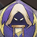
Неуловимый убийца: каждое использование мобильного скилла даёт пассивное уклонение. Пока ты в движении — ты неуязвим. Стоишь на месте — тебя убивают. Это не просто пассивка, это вся философия класса.
В Large Scale главный инструмент — Копьё-Инферно: рикошетит между врагами и при броске в плотный кластер может уничтожить сразу несколько человек. В Arena ShadowDancer работает как скрытный ассасин с жёсткой CC-цепочкой — один пропуск, и весь комбо рушится.
Роль в T1
Large Scale
- Backline diver — пока союзники держат фронт, ты обходишь и убиваешь хилеров
- AoE bomb dealer — Копьё-Инферно в плотном кластере = самый высокий разовый AoE-урон в LS
- Инфузия молнии + Дух грома всегда вместе перед броском — по отдельности вдвое слабее
- Покров невидимости — для скрытного подхода ДО атаки, не для паники при низком HP
- Фантомная завеса — твой щит во время дайва, блокирует Chain Hook и AoE
Arena
- Single-target burst assassin — убийство с первого комбо, пока цель в CC
- Клинок возмездия → Удар из тени (бинд + сайленс) — всегда открывает цепочку
- Каждый шаг цепи критичен: бинд → стан → прон создают окно, в которое уходит весь урон
- Один пропуск — цель выходит из CC, бёрст-окно закрывается
Сильные стороны
Сильные стороны
AoE burst potential — Копьё-Инферно на кластере
Мобильность — множество мобильных скиллов
Неуловимый убийца evasion — пассивное уклонение при движении
Тактическая гибкость — разные билды под ситуацию
Слабые стороны
Нет маны — проблемы с сустейном в затяжных боях
Нет самохила (кроме Клинок вампира в alt-билде)
Уязвим к melee peel — танки/S+S блокируют доступ к бэклайну
Combo-dependent в Arena — один пропуск = сброс комбо
Требует управления амуницией — Embers для Javelin
Ключевые ограничения
Ammo Management
Копьё-Инферно без 5 Embers — это почти пустой бросок. Заряды набираются через Взрывная ярость примерно за 30 секунд на глобальном сервере. Значит, нельзя бросать Javelin в спешке: нужно ждать, считать заряды и атаковать только когда ты готов.
Combo Dependency (Arena)
Один пропуск в цепочке (бинд → стан → прон) — и цель свободна, а весь твой бёрст ушёл в никуда. Это главная причина, почему ShadowDancer сложен в Arena. Отработай последовательность на манекене до полного автоматизма, иначе в реальном бою нервы сделают своё.
Антидот для слабостей
Всё это лечится движением. Неуловимый убийца — твоя основная защита. Каждый мобильный скилл даёт уклонение. CDR мобилок — не просто удобство, это боевой стат уровня Hit Chance.
Роль в Large Scale
Твоя роль в LS — не фронтлайн и не дальняя поддержка. Ты ныряешь за линию врага, к хилерам и рейнджерам, взрываешь Копьё-Инферно в кластере и откатываешься. Идеальный раунд: незаметно зашёл через Покров невидимости, кинул Javelin в толпу, забрал несколько убийств, вышел живым. Иногда правильное решение — умереть после удачного bombing run: главное, чтобы атака состоялась.
Золотое правило Large Scale
Ты не танк. Агрессивный стиль дайва выгоднее осторожного: Kill streaks быстрее возвращают Embers для следующего броска. Расчётная смерть после удачного Javelin — это нормальный обмен.
| Механика | Описание | Применение |
|---|
| Копьё-Инферно | Рикошетит между сгруппированными врагами | В кластере 4+ врагов |
| Инфузия молнии + Дух грома | Оба одновременно = экспоненциальный буст | Всегда перед Javelin |
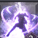 Покров невидимости | Репозиционирование ДО атаки | Подход к бэклайну |
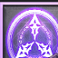 Фантомная завеса | Блокирует AoE и Chain Hook | Во время дайва/выхода |
| Неуловимый убийца | Уклонение при каждом мобильном скилле | Постоянное движение |
LS Core Build — 6 обязательных скиллов
Эти 6 скиллов не меняются ни в одном варианте LS-билда
Без них механика класса не работает. Flex-слоты (остальные 6) подбираются под сервер и стиль игры.
Bind + Silence — опенер CC-цепочки. Основа всего комбо.
AoE prone — продолжение CC-цепочки после Удар из тени.
Основной DPS-финишер комбо.
Gap closer, мобильность, дополнительный урон. Активирует Неуловимый убийца.
Пре-бафф — усиление урона + накопление стаков яда.
CC resistance во время бёрст-окна. Обязателен для выживания при дайве.
Пассивки Large Scale
Неуловимый убийца (KEY!)
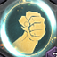
Искусство боя
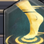
Лёгкие шаги
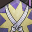
Прорыв
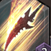
Голодная сталь
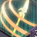
Неумолимость
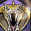
Жажда смерти
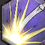
Инстинкты убийцы
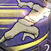
Поступь текучей воды
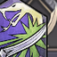
Клинки гнева
LS Flex Build — варианты
Полный список 12 скиллов
Гале Буря · Превосходство · Смещённый шаг · Колышащий вой · Фантомная завеса · Танец кинжалов · Удар из тени · Несгибаемый страж · Клинок возмездия / Взрывная ярость · Отравное жало · Падающая звезда · Покров невидимости
Flex-добавки
| Скилл | Роль | Примечание |
|---|
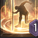 Падающая звезда | Накопление Embers | Основа AoE механики |
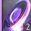 Клинок возмездия / Взрывная ярость | 5 Embers за 30 сек | Главный генератор зарядов |
| Покров невидимости | Стелс-репозиционирование | Спорный — используй до атаки |
| Фантомная завеса | Защита при дайве | Блокирует Chain Hook + AoE |
Плюсы
Макс AoE бёрст на сгруппированных врагах
Высший потенциал урона в LS
Использует главное преимущество класса
Минусы
Требует управления амуницией (5 Embers)
Зависит от скопления врагов
Слабее против одиночных целей
| Изменение | Скиллы |
|---|
| Убраны vs Javelin-билд | Падающая звезда · Клинок возмездия/Взрывная ярость · Покров невидимости |
| Добавлены | 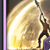 Крестовый разрез · Неистовая ярость ×4 · Восходящий разлом · 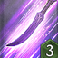 Клинок вампира |
Когда использовать
Frontline-ориентированные серверы; управление амуницией затруднено; post-KR-nerf логика; нужен self-sustain (Клинок вампира — единственный вариант самохила).
Плюсы
Нет управления амуницией
Более надёжное исполнение
Клинок вампира = единственный самохил
Минусы
Значительно меньший AoE потолок vs Javelin
Не использует ключевое преимущество класса
Меньше давление на дальней дистанции
Внимание
Только один источник (ArzyeLBuilds). Нишевый альтернативный вариант, не стандарт.
Пассивки LS
Неуловимый убийца — фундамент выживаемости. Берётся первой и без обсуждений: без неё ты умираешь при каждом дайве. Остальные пассивки усиливают урон или мобильность и подбираются под конкретный сервер и стиль игры.
Неуловимый убийца (KEY)
Искусство боя
Лёгкие шаги
Прорыв
Голодная сталь
Неумолимость
Жажда смерти
Инстинкты убийцы
Поступь текучей воды
Клинки гнева
Правило по Неуловимый убийца
Чем чаще нажимаешь мобильные скиллы — тем дольше активно уклонение. CDR на мобилки приоритетнее прямого повышения урона: мёртвый ассасин урон не наносит.
Специализации LS (100 очков, открытие на 15 уровне)
| # | Скилл | Причина |
|---|
| 1 | Клинок возмездия / Взрывная ярость | Высший приоритет — ядро Javelin-билда |
| 2 | Падающая звезда | Основная damage spec для LS |
| 3 | Крестовый разрез | Следующий приоритет |
| 4 | Танец кинжалов | Следующий |
| 5 | Удар из тени CDR | Поддерживает uptime Неуловимый убийца |
| 6 | 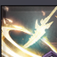 Гале Буря / мобильные скиллы CDR | Uptime Неуловимый убийца |
| 7 | Спец. Бастиона стража | Бонус Heavy Attack Chance |
| 8 | Отравное жало | До 20 стаков яда |
| 9 | Лёгкие шаги | CC resistance (пассивка) |
| 10 | Инстинкты убийцы | Critical rate (пассивка) |
Скриншоты специализаций
Совет
Нажми на изображение, чтобы открыть в полном размере.
Ротации Large Scale
LS AoE Bomb Rotation (StudioLoot + Maxroll)
Инфузия молнии→
Дух грома→
Покров невидимости→
Взрывная ярость ×n→
Копьё-Инферно ×5→
Фантомная завеса+
Несгибаемый страж
LS Full Burst Combo (Maxroll)
Отравное жало/
Инфузия молнии→
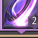
Смещённый шаг/
Дух грома→
Удар из тени→
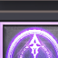
Подсечка→
Взрывная ярость→
Крестовый разрез ×2→
Колышащий вой→
Танец кинжалов→
Грозовая бомбардировка/
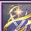
Жёсткое различение→
Превосходство
LS No-Javelin Frontline (ArzyeLBuilds)
Инфузия молнии→
Крестовый разрез ×2→
Танец кинжалов→
Неистовая ярость ×4→
Превосходство→
Грозовая бомбардировка
Позиционирование Large Scale
| Фаза | Действие |
|---|
| До боя | Стоять за своим фронтлайном; ждать готовности Инфузия молнии + Дух грома; накапливать 5 Embers за линией |
| Вход в бой | Покров невидимости → стелс-подход к бэклайну; выбор цели: хилеры → рейндж DPS → CC специалисты; Копьё-Инферно в центр кластера |
| Во время боя | Фантомная завеса на попытку Chain Hook или mass AoE; Неуловимый убийца через постоянное движение; не застревать в фронтлайне |
| Выход | Покров невидимости (если не использован на входе); Фантомная завеса под прямой угрозой; Превосходство + Гале Буря как escape мобильность |
Главное правило позиционирования
Твоя позиция нестабильна по определению: зашёл, взорвал, вышел. Kill streaks быстрее возвращают Embers, поэтому агрессивный стиль дайва выгоднее пассивного.
Приоритет целей Large Scale
| # | Цель | Причина |
|---|
| 1 | Хилеры / саппорты (Wand бэклайн, Staff хилеры) | Убийство устраняет выживаемость врагов — ключевой множитель победы |
| 2 | Рейндж DPS (Longbow, Crossbow) | Хрупкие; наносят высокий урон союзникам; убиваются одним Javelin комбо |
| 3 | CC специалисты (Staff/Dagger) | Высокий контроль союзников; хрупкие; приоритет когда возможно |
| 4 | Melee DPS | Вторичная цель при отсутствии бэклайна |
| 5 | Танки (S+S билды) | Последний приоритет; высокая выживаемость; убегай, не атакуй |
Советы Large Scale
Инфузия молнии + Дух грома: только вместе
Суть в синергии: если активировать оба баффа одновременно прямо перед броском Javelin, урон растёт экспоненциально. Если по одному — каждый работает сам по себе и суммарный эффект значительно ниже. Порядок: ЛИ → Дух грома → Javelin.
Фантомная завеса — не реактивный щит
Не жди, пока тебя уже зацепили Chain Hook-ом или накрыли AoE. Активируй при первых признаках угрозы: видишь замах, видишь каст в свою сторону. Реактивное использование часто опаздывает на долю секунды и не спасает.
Неуловимый убийца — думай о CDR как о защите
Каждый раз, когда нажимаешь мобильный скилл, активируется уклонение. Как только скиллы на КД — ты беззащитен. Именно поэтому CDR на мобилки в билде не менее важен, чем атакующие статы.
Копьё-Инферно раскрывается только в толпе
Механика рикошета требует нескольких целей рядом — иначе урон теряется. Если враги разошлись, не торопись с броском. Подожди кластер, или смени цель. Бросок в одиночку — почти зря потраченные 5 зарядов.
Роль в Arena
В Arena ShadowDancer работает как хирургический нож: один заход, одна цель, полное CC-окно и максимальный урон за считанные секунды. Задача — убить цель до того, как она успеет отреагировать. Всё строится на заходе из стелса и последующей цепочке без паузы: каждый следующий скилл должен идти сразу после предыдущего, не давая цели выйти из контроля.
LS-ротация в Arena не работает
Копьё-Инферно, Взрывная ярость и AoE-комбо созданы для групп. Против одного противника урон минимальный. Как только идёшь в Arena — переключаешься на CC chain ротацию.
Arena Core Build — 7 обязательных скиллов
Bind + Silence — ключевой опенер. Начало всей CC-цепочки.
Стелс-опенер — неожиданный энгейдж. Заходи из стелса всегда когда возможно.
Prone — открывает бёрст-окно. Третье звено CC-цепочки.
DPS во время CC-окна. Основной урон в бёрст-фазе.
Пре-бафф + усиление урона. Использовать ДО входа в стелс.
Мобильность + дополнительный урон. Неуловимый убийца activation.
Double-hit по CC целям. Критически важен в бёрст-окне.
Приоритет специализаций Arena
| # | Специализация | Причина |
|---|
| 1 | Удар из тени CDR | Критично для повторного энгейджа |
| 2 | Жёсткое различение Damage Increase | Основной финишер — спек |
| 3 | Mobility CDR | Неуловимый убийца uptime |
| 4 | Survivability specs | Резилайенс во время бёрста |
| 5 | Крестовый разрез / Танец кинжалов | Остаток очков |
Варианты Arena
Полный список 12 скиллов
Гале Буря · Превосходство · Крестовый разрез · Колышащий вой · Клинок возмездия · Танец кинжалов · Покров невидимости · Удар из тени · Несгибаемый страж · Отравное жало · Лунное марево · Жёсткое различение
Плюсы
Полный CC-лок одной цели
Высокий single-target бёрст на идеальном комбо
Преимущество внезапности из стелса
Минусы
Один пропуск = комбо рушится → катастрофа DPS
Минимальный запас прочности
Требует стабильного соединения
| Изменение | Скиллы |
|---|
| Убраны | 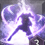 Лунное марево · Жёсткое различение |
| Добавлен | Грозовая бомбардировка |
Когда использовать
Нестабильный пинг; новички; мобильные цели. Меньше точек провала, более быстрое исполнение, прощает одну ошибку.
Ограничение
Нижний потолок бёрста — может не убить цель с хорошим гиром за одно комбо.
Добавления к основному билду
Подсечка · Взрывная ярость · Смещённый шаг / Дух грома
Когда использовать
Высокий скилл + стабильный пинг; vs хрупкие цели; цель без CC immunity.
Плюсы
Максимальный бёрст урон
Убивает за одно комбо
Минусы
Самое длинное комбо = максимум точек провала
Требует идеальных условий
Ротации Arena
Arena CC Chain Rotation (Metabattle + ArzyeLBuilds)
Несгибаемый страж→
Отравное жало→
Клинок возмездия→
Удар из тени→
Гале Буря→
Колышащий вой→
Танец кинжалов→
Крестовый разрез ×2→
Превосходство→
Лунное марево→
Жёсткое различение
Arena Shortened Combo (Maxroll — Beginner)
Отравное жало/
Инфузия молнии→
Дух грома→
Удар из тени→
Колышащий вой→
Танец кинжалов→
Грозовая бомбардировка→
Превосходство
Arena Full Burst Max (Maxroll — High-Skill)
Отравное жало/
Инфузия молнии→
Смещённый шаг/
Дух грома→
Удар из тени→
Подсечка→
Взрывная ярость→
Крестовый разрез ×2→
Колышащий вой→
Танец кинжалов→
Грозовая бомбардировка/
Жёсткое различение→
Превосходство
Позиционирование в Arena
Заход из стелса — не просто удобно, это фундаментальное преимущество: цель не готова к удару. До входа держи дистанцию и не показывай намерений. После того как цепочка началась — максимально сближайся, финишеры работают в упор. Фантомная завеса — когда противник пытается контратаковать в момент выхода из CC.
Матчапы (30% уверенность — ориентир, не абсолют)
Внимание
Матчапы — приблизительный ориентир с 30% уверенностью. Реальный результат зависит от скилла игрока, гира, пинга и ситуации.
| Противник | Исход | Причина |
|---|
| Ranged DPS (Longbow, Crossbow) | Favored | Основная цель для дайва; хрупкий бэклайн |
| Staff DPS (Staff/Wand) | Favored (изолированно) | Хрупкие; осторожно с AoE |
| S+S/Greatsword (S-Tier) | Unfavored | Melee peel; блокирует доступ к бэклайну |
| S+S/Wand (S-Tier) | Unfavored | Защита бэклайна + самохил |
| GS/Dagger (S-Tier Arena) | Unfavored Arena | Более стабильный single-target бёрст |
| Staff/Dagger (S-Tier Arena) | Hard | Больше контроля и сустейна |
| High Evasion builds | Hard | Требует Hit Chance 2400-2700 |
| High Endurance / Tank | Hard | Инфузия молнии обязателен |
Очерёдность прокачки (8 шагов)
1
Оружие (высший приоритет)
Deluzhnoa's Hail Spear — абсолютный BiS. Queen Bellandir's Serrated Spike — ремесло как промежуточный шаг к BiS.
2
50 STR брейкпоинт — обязателен до скейла DEX
Даёт здоровье + Heavy Attack Chance без потери DPS. Обязательный хард кап.
3
Hit Chance до 2000+ (цель 2400-2700 с баффами)
Высший приоритет среди боевых статов. На серверах с Evasion-билдами — минимум 2400-2700+.
4
T1 Броня: Imperator + Death
Melee Heavy Attack Chance + Critical Damage. Приоритет выше аксессуаров.
5
CDR специализации (Неуловимый убийца uptime)
CDR на мобильные скиллы перед raw damage spec'ами. Неуловимый убийца uptime = выживание.
6
DEX скейл до 70 — после шагов 1-5
Только после выполнения предыдущих шагов начинай скейлить DEX.
7
Guardian: Pale Nemesis Hartach — Offensive LS
После основного гира. Активируется только на убийствах — использовать в активной фазе боя.
8
T2 Броня prep (Imperial Seeker / Wing Gale)
Долгосрочная цель. Не приоритет T1. Critical Damage + Critical Hit Chance.
Приоритет развития скиллов
| # | Скилл |
|---|
| 1 | Удар из тени — core CC |
| 2 | Несгибаемый страж — CC resistance |
| 3 | Падающая звезда / Взрывная ярость — LS damage engine |
| 4 | Танец кинжалов — DPS |
| 5 | Колышащий вой — CC chain |
| 6 | Превосходство — мобильность |
| 7 | Отравное жало |
| 8 | Пассивки: Неуловимый убийца, Инстинкты убийцы, Лёгкие шаги |
Приоритет экипировки
| Слот | Предмет | Тип | Получение |
|---|
| Spear (старт) | Shaikal's Mindveil Harpoon | T1 Epic | Крафт |
| Spear (ранний T1) | Junobote's Smoldering Ranseur | T1 Epic | Boss drop |
| Spear (крафт BiS) | Queen Bellandir's Serrated Spike | T1 Epic | Крафт (Weapon Crafter NPC) |
| Spear (абс. BiS) | Deluzhnoa's Hail Spear | T1 Epic | Еженедельный Archboss (Sandworm Lair) |
| Dagger | Lequirus's Wicked Thorns | T1 Epic | Boss drop |
Deluzhnoa's Hail Spear — особый эффект
80% шанс Collision: Push на Превосходство. Если враг ударяется о стену → 3 секунды стана. Меняет геймплей в Arena.
Приоритет статов
Атрибуты (Attribute Points)
| Этап | STR | DEX | PER | WIS |
|---|
| Ранний T1 (базовый) | 17 | 20 | 10 | 2 |
| T1 Epic цель | 50 | — | 60 | — |
| Endgame T1 (Maxroll) | 50 | 70 | 50 | мин |
50 STR — обязательный хард кап
Даёт здоровье + Heavy Attack Chance без потери DPS. Выполни до скейла DEX.
Боевые статы
Melee Hit Chance ★ Высший приоритет
мин 2000 → цель 2400-2700
Melee Critical Hit
2500+ → max
Ranged/Magic Evasion
1800 → 2000
Серверные корректировки
Evasion-тяжёлые серверы → Hit Chance минимум 2400-2700+. Цели с высокой Endurance → Инфузия молнии обязателен (penetration сопротивления).
Оружие и броня
T1 Броня
| Этап | Сет | Бонусы |
|---|
| T1 | Imperator + Death | Melee Heavy Attack Chance + Critical Damage |
| T2 prep | Imperial Seeker + Wing Gale | Critical Damage + Critical Hit Chance |
Queen Bellandir's Serrated Spike
Наиболее доступный BiS-adjacent (крафт); даёт Perception + Fortitude + CDR. Используй как stepping stone до Deluzhnoa's Hail Spear.
Аксессуары и Guardian
T3 Аксессуары (цели Metabattle)
Earrings of Forlorn Elegance
Noble Birthright Brooch
Infernal Demonpact Cuffs
Solitaire of Purity
Runed Band of the Black Anvil
Elusive Nymph Coil
Серверные варианты аксессуаров
Evasion-тяжёлые серверы: фокус на Hit Chance в аксессуарах. Tank/S+S-тяжёлые серверы: Shield Block Penetration в аксессуарах и рунах.
Guardians
| Guardian | Тип | Эффект | Когда |
|---|
| Pale Nemesis Hartach | Offensive | Убийства → репозиционирование врагов | Large Scale, offensive стиль |
| Lady Knight Kamarshea | Defensive | Щит + CDR при тяжёлом уроне | Defensive / Arena |
Guardians — проактивно, не в панике
Hartach активируется только на убийствах — используй в активной фазе боя. Kamarshea и Hartach ставятся ПРОАКТИВНО в начале боя. Реактивное использование = потеря эффекта.
Альтернативные варианты
Основная альтернатива — No-Javelin Melee Burst Build (ArzyeLBuilds). Если Копьё-Инферно недоступен или управление амуницией затруднено:
- Замена: Падающая звезда → Крестовый разрез
- Замена: Клинок возмездия/Взрывная ярость → Неистовая ярость ×4
- Замена: Покров невидимости → Клинок вампира (единственный самохил)
- Добавление: Восходящий разлом
Клинок вампира
Единственная опция самохила в классе. Доступна только в No-Javelin alt-билде. Полезна на frontline-ориентированных серверах.
Топ-8 распространённых ошибок
Ошибка #1
Копьё-Инферно без 5 Embers
Самая частая ошибка новичков. Урон Копьё-Инферно без 5 Embers настолько низкий, что бросок теряет смысл. На глобальном сервере набор идёт около 30 секунд. Приучи себя проверять счётчик зарядов перед броском — это секунда внимания, которая сохраняет весь потенциал атаки.
Ошибка #2
Копьё-Инферно в одну цель
Рикошет — суть всего скилла. Без второй цели рядом Копьё-Инферно бьёт как обычная атака. Если враги разошлись — жди, перегруппируйся, зайди с другой стороны. Торопиться с броском в пустоту нет смысла.
Ошибка #3
Инфузия молнии и Дух грома по отдельности
Инфузия молнии и Дух грома дают экспоненциальный буст именно когда активны одновременно. По отдельности каждый работает сам по себе — суммарный эффект кратно меньше. Настрой порядок каста: ЛИ → Дух грома → Javelin, и не отступай от него.
Ошибка #4
AoE ротация в Arena
AoE-скиллы и Взрывная ярость создавались для групповых боёв. В дуэли урон минимальный, позиционирование ломается. Для Arena есть своя ротация — переключись на неё до входа в бой.
Ошибка #5
Покров невидимости как реактивный побег
Покров невидимости — инструмент скрытного входа, а не кнопка спасения. Когда тебя уже бьют, активация клоука ситуацию не спасает. Правильный паттерн: Cloak → скрытный подход → атака. Не наоборот.
Ошибка #6
Пропуск шага CC-цепочки в Arena
Arena-ротация прощает ноль ошибок. Один пропуск в цепочке — цель выходит из CC, и всё бёрст-окно потеряно. Не надейся, что прокатит: отработай последовательность на тренировочном манекене до мышечной памяти.
Ошибка #7
Нет мобильности для Неуловимый убийца
Если стоишь — ты беззащитен. Неуловимый убийца активен только пока двигаешься через мобильные скиллы. Следи за их КД и нажимай при первой возможности, даже не атакуя — это основной способ выживания в бою.
Ошибка #8
Guardians в панике
Guardian — не аварийная кнопка. Hartach активируется от убийств, поэтому включай его в начале активной фазы боя. Kamarshea тоже ставится проактивно, а не когда HP уже в красном. Включил Guardian в панике — потерял весь его эффект.
Как исправить ошибки
| Ошибка | Исправление |
|---|
| Javelin без Embers | Смотри на счётчик зарядов. 5 есть — атакуешь. Нет — ждёшь. |
| Javelin в одного | Жди кластер 4+ и подходи к группе — не бросай через всё поле. |
| Баффы по отдельности | Поставь горячие клавиши рядом. Жёсткий порядок: Инфузия молнии → Дух грома → Javelin. |
| AoE в Arena | Переключись на CC chain ротацию до входа в бой. AoE-скиллы в 1v1 не применяешь. |
| Реактивный Cloak | Покров невидимости — первый шаг ротации, а не спасение. Включай ДО броска Javelin. |
| Пропуск CC звена | Нет коротких путей: только тренировка на манекене до полного автоматизма. |
| Нет движения | CDR на мобильные скиллы. Всегда жми мобильность. |
| Guardians реактивно | Ставь Guardian при первом контакте, не когда уже умираешь. |
Шпаргалка — 2-й монитор
Core Build LS (6 обяз.)
- Удар из тени — CC/Opener
- Колышащий вой — CC+AoE
- Танец кинжалов — DPS Finisher
- Превосходство — Mobility+DPS
- Отравное жало — Pre-buff
- Несгибаемый страж — Survival
Core Build Arena (7 обяз.)
- Удар из тени — CC/Opener
- Клинок возмездия — Stealth Opener
- Колышащий вой — Prone
- Танец кинжалов — DPS
- Крестовый разрез — Double-hit CC
- Превосходство — Mobility
- Отравное жало — Pre-buff
LS AoE Bomb Rotation
Инфузия молнии+
Дух грома→
Покров невидимости→
Взрывная ярость×n→
Копьё-Инферно×5→
Smokescreen+Sentinel
Arena CC Chain
Sentinel→
Отравное жало→
Клинок возмездия→
Удар из тени→
Гале Буря→
Колышащий вой→
Танец кинжалов→
Крестовый разрез×2→
Превосходство→
Жёсткое различение
Приоритет целей LS
- Хилеры / саппорты (Wand, Staff)
- Рейндж DPS (Longbow, Crossbow)
- CC специалисты (Staff/Dagger)
- Melee DPS
- Танки (S+S) — ПОСЛЕДНИЕ, убегай
Топ-5 Tips
- Инфузия молнии + Дух грома вместе → Javelin
- 5 зарядов до броска — иначе не кидать
- Неуловимый убийца = постоянно нажимай мобилки
- Покров невидимости = вход в бой, не паника
- Guardian активируй до атаки, не когда умираешь
Топ-5 Ошибок
- Javelin без 5 зарядов
- Javelin в одну цель
- ЛИ и Дух грома по отдельности
- AoE ротация в Arena
- Пропуск шага CC-цепочки
Источники
Maxroll — ShadowDancer PvP Build Guide
https://maxroll.gg/throne-and-liberty/build-guides/spear-dagger-pvp-build-guide
2026
High
Maxroll — Large Scale PvP Tier List
https://maxroll.gg/throne-and-liberty/tierlists/large-scale-pvp-tier-list
Март 2026
High
Maxroll — Small Scale PvP Tier List
https://maxroll.gg/throne-and-liberty/tierlists/small-scale-pvp-tier-list
Март 2026
High
Metabattle — ShadowDancer Large Scale PvP Build
https://metabattle.com/tl/Shadowdancer_-_Spear_+_Dagger_Large_Scale_PvP_Build
Сентябрь 2025
Medium
Metabattle — ShadowDancer Small Scale PvP Build
https://metabattle.com/tl/Shadowdancer_-_Spear_+_Dagger_Small_Scale_PvP_Build
Сентябрь 2025
Medium
ArzyeLBuilds — Throne and Liberty Spear Dagger PvP Build
https://arzyelbuilds.com/throne-and-liberty-spear-dagger-pvp-build-tl/
2025
Medium
StudioLoot — Spear Dagger PvP Build Guide
https://www.studioloot.com/throne-and-liberty/articles/spear-dagger-pvp-build-guide/
2025
Medium
Game8 — Throne and Liberty
https://game8.co/games/Throne-and-Liberty/archives/488191
2025
Medium